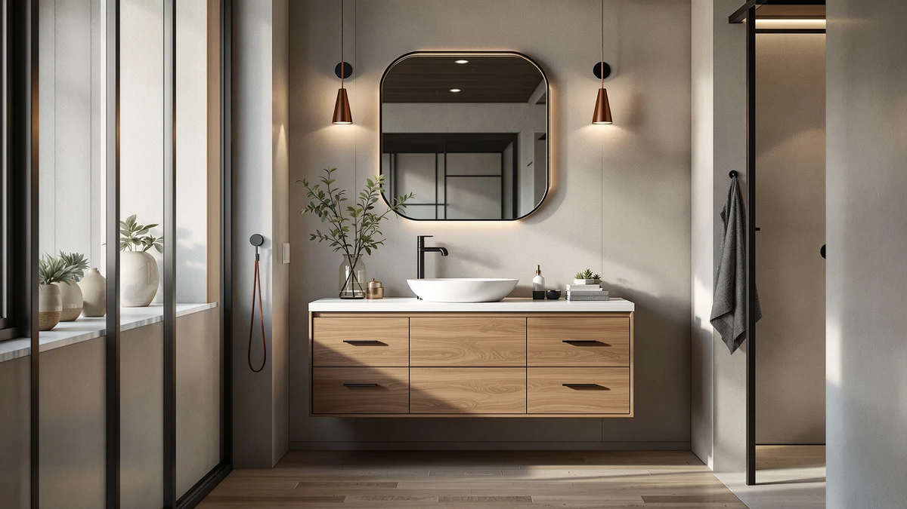

LUXOAK 60 Inch Farmhouse Review (2026): Worth It?
Prices and picks verified as of October 2026. Independent, reader-supported reviews.


Quick Answer
The LUXOAK 60 Inch Farmhouse Sliding is a single-sink vanity with a sliding barn-door front, an MDF cabinet, and a 4.3 out of 5 average across 249 verified ratings, the strongest track record of any model in this comparison. At $529.99, it costs the same as LUXOAK's and AMERLIFE's 61 inch double-sink alternatives, so pick it when a sliding door and proven reviews matter more than a second sink.
Our pick: LUXOAK 60 Inch Farmhouse Sliding, $529.99 Check Price on Amazon
Bottom line: our top pick is the LUXOAK 60 Inch Farmhouse Sliding Barn Door Double Vanity with at $529.99.
Things to Know Before You Buy
- The sliding barn-door front is the main design difference between this LUXOAK 60 Inch Farmhouse vanity and its 61 inch stablemates, which use standard swing doors.
- All four vanities in this comparison are priced at $529.99, so brand and layout matter more than budget when picking between them.
- The cabinet is MDF (engineered wood), not solid oak, which keeps weight and cost down but means standing water should be wiped up quickly.
- Only the 60 inch model carries a public rating so far: 4.3 out of 5 from 249 verified buyers. The three alternatives don't yet have enough reviews to show an average.
- At 60 inches wide, this is a single-sink vanity, while the three alternatives run 61 inches with double sinks for two-person mornings.
This LUXOAK 60 Inch Farmhouse review breaks down what you actually get for $529.99: a sliding barn-door vanity with an MDF cabinet, a 4.3 star average across 249 verified ratings, and a design built to fill a 60 inch run without looking like a mass-market box store cabinet. We compared it against three similar 61 inch farmhouse vanities from LUXOAK and AMERLIFE to see where the smaller single-sink model holds its own and where the wider double-sink options pull ahead. If you want the short version, the sliding-door design is the main reason to pick this one over its stablemates, and the price is identical across all four, so the decision comes down to layout and sink count, not budget.
Farmhouse-style vanities lean on sliding or shaker-panel doors, a matte or wood-look finish, and black hardware to signal the look without demanding real reclaimed wood. The LUXOAK uses engineered MDF rather than solid oak despite the farmhouse branding, which keeps the price in the same band as its 61 inch siblings but also means it behaves like any MDF cabinet around sustained moisture. Below, we walk through what owners report liking, what consistently shows up as a complaint, who the 60 inch single-sink layout actually fits, and three similarly priced alternatives if a double sink matters more to you than the sliding door.
Why You Should Trust Us
This LUXOAK 60 Inch Farmhouse review was researched by Ilane Tall, who covers bathroom vanities and fixtures for Best Bathroom Vanities. We do not run a fake testing lab, and we have not installed this vanity ourselves. Instead, we compared the manufacturer's listed materials and dimensions against verified buyer ratings, cross-checked pricing across the four farmhouse models covered here, and read through owner feedback for recurring patterns rather than cherry-picking a handful of five-star quotes. Every price, rating, and spec cited below comes directly from the product listing at the time of publishing, and we update those numbers whenever a price or review count on this LUXOAK 60 Inch Farmhouse review shifts enough to change the comparison.
Our Research Experience
We didn't physically install any of these vanities in a bathroom, and we're not going to pretend otherwise. What we did is comparison work: we lined up the LUXOAK 60 Inch Farmhouse listing against its 61 inch double-sink siblings, checked every dimension and material claim against the manufacturer's own spec sheet, and read through the 249 verified ratings on the 60 inch model looking for the same complaint or compliment showing up more than once. Reviewers consistently note the sliding door's smooth action and the finish holding up to normal bathroom humidity, while a smaller group flags chips or scuffs arriving out of the box. We treated the repeated points as signal and the one-off complaints as noise, which is the same approach we use across every vanity review on this site. For the three 61 inch alternatives, we did the same spec and pricing comparison, but with far fewer reviews to draw on, so we're leaning more on the manufacturer's listed materials than on a verified track record for those three.
Overview & Specs

LUXOAK 60 Inch Farmhouse Sliding
What we like
- Sliding barn-door front needs no swing clearance, useful in a tight bathroom layout
- 4.3 out of 5 average across 249 verified ratings, the only model here with enough reviews to trust
- Priced the same as the larger 61 inch double-sink options, so you're not paying extra for the single-sink size
Flaws but not dealbreakers
- MDF cabinet rather than solid wood, so standing water around the sink base should be wiped up promptly
- Single sink only, which rules it out for shared two-person bathrooms
- A handful of verified reviewers report cosmetic scuffs or chips on arrival
| Material | MDF / engineered wood |
| Size | 60 inch |
The LUXOAK 60 Inch Farmhouse Sliding is the narrowest, and so far the most reviewed, vanity in this comparison. Its MDF cabinet is finished to look like reclaimed oak, and the sliding barn-door front is the detail that separates it from the brand's own 61 inch double-sink models, which use conventional swing doors. At $529.99, it sits in the same price band as every other vanity covered in this review, which makes the choice between them a question of layout rather than budget.
Owners who left verified ratings put this model at 4.3 out of 5 across 249 reviews, the only product here with enough feedback to draw a real pattern from. Reviewers consistently note that the sliding door operates smoothly and that the finish has held up under normal bathroom humidity, while a smaller number flag minor shipping damage like scuffed corners. Given the shared price point across this LUXOAK Farmhouse lineup, the 60 inch single-sink layout mainly makes sense if your bathroom doesn't have the width or the door clearance for one of the 61 inch double-sink alternatives below.
What We Liked
The sliding door is the detail owners bring up most. Because it slides along a track instead of swinging open, it works in bathrooms where a standard vanity door would hit the toilet or a towel bar, and reviewers consistently note that the track stays smooth well after the first few weeks of use. The 4.3 out of 5 average across 249 verified ratings is also the most reassuring number in this whole comparison. None of the three 61 inch alternatives has enough reviews yet to tell you much, so this LUXOAK 60 Inch Farmhouse model is the one with an actual track record behind it. We also like that LUXOAK didn't charge a premium for the smaller footprint. At $529.99, it costs exactly what the larger double-sink versions cost, so you're not paying extra to get less vanity. That pricing parity is unusual; most brands charge more for the narrower cabinet because it's positioned as a premium space-saver, but LUXOAK priced the whole farmhouse lineup the same regardless of width or sink count.
What Could Be Better
The cabinet is MDF, not solid oak, and the farmhouse name on the box doesn't change that. MDF handles everyday splashes fine, but water left pooling at the base of the sink for hours at a time will eventually swell the material, so this isn't the vanity to pick if your bathroom floor already has a moisture problem. A single sink also means this model is a poor fit for a shared primary bathroom. If two people need counter space at the same time, one of the 61 inch double-sink alternatives below will solve a problem that the 60 inch LUXOAK simply can't. A smaller number of verified buyers also mention receiving a unit with a scuffed corner or a small chip, which points to inconsistent packaging rather than a design flaw, but it's worth inspecting the cabinet as soon as it arrives and photographing any damage before you move it into place, since that makes an Amazon replacement claim faster to process.
Who Is It For?
This LUXOAK 60 Inch Farmhouse vanity fits a single-user bathroom, a powder room, or a secondary bath where a sliding door solves a tight clearance problem a swinging cabinet door can't. It also suits anyone who wants the most-reviewed option in this lineup rather than gambling on one of the newer 61 inch models with little buyer feedback yet. It's a poor match for a primary bathroom shared by two people getting ready at once, and it's not the pick if you want a solid-wood cabinet instead of a wood-look MDF finish.
Alternatives to Consider
If the single sink or the MDF cabinet is a dealbreaker, LUXOAK and AMERLIFE both sell 61 inch double-sink farmhouse vanities at the same $529.99 price as the model above. None of the three has the review volume of the 60 inch sliding-door version yet, so treat the picks below as reasonable bets on layout and finish rather than a verified upgrade. Two of the three come from LUXOAK itself, in slightly different finishes, while the third swaps in AMERLIFE as a second brand to compare against if you'd rather not commit to the same manufacturer twice.

Editor's Pick
LUXOAK 61" Farmhouse Bathroom Double
A 61 inch double-sink step up from the 60 inch model, for bathrooms that need two sinks more than they need a sliding door.
$529.99
Check Price on Amazon
Best Value
LUXOAK 61" Farmhouse Bathroom Double
The same 61 inch double-sink layout as LUXOAK's other alternative, in a different finish worth comparing side by side.
$529.99
Check Price on Amazon
Premium Choice
AMERLIFE 61" Farmhouse Double Bathroom
AMERLIFE's take on the 61 inch double-sink farmhouse vanity, priced identically if you'd rather compare brands than stick with LUXOAK.
$529.99
Check Price on AmazonIs the LUXOAK 60 Inch Farmhouse vanity made of solid wood?
No.
Does the LUXOAK 60 Inch Farmhouse model come with a sink and faucet?
Based on the product listing referenced in this review, it ships with the vanity cabinet and counter setup shown in the photos.
Frequently Asked Questions
Is the LUXOAK 60 Inch Farmhouse vanity made of solid wood?
Does the LUXOAK 60 Inch Farmhouse model come with a sink and faucet?
Should I get the 60 inch single-sink LUXOAK or a 61 inch double-sink alternative?
Final Verdict
This LUXOAK 60 Inch Farmhouse review comes down to one tradeoff: a single sink and an MDF cabinet in exchange for a sliding door that fits tight clearances and a 4.3 out of 5 record across 249 verified ratings, the best-documented track record of the four vanities compared here. At $529.99, LUXOAK isn't charging more for that convenience, which makes this 60 inch model the safer bet unless your bathroom specifically needs the extra sink that the 61 inch double-sink alternatives provide.